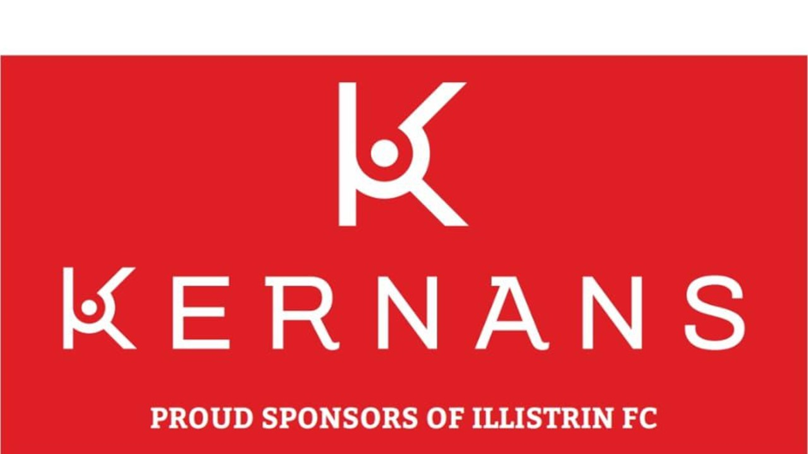
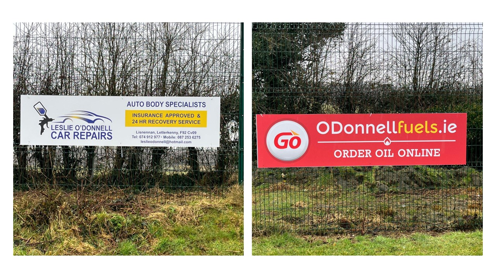

Illistrin FC relies on the generous support of our community to keep the club running and to continue providing quality football opportunities for children and young people in the area. To ensure the continued and sustainable development of the club two main themes are critical — Volunteerism and Fundraising. Should you feel you can assist in either of these, please do not hesitate to reach out to one of those listed in the contacts section of the site.
Fundraising
Fundraising is essential to maintaining our club and supporting our 20+ teams across all age groups. Grounds maintenance, equipment, jerseys, referee fees, transport and recognition nights provide a constant source of expense to the club. Any support received from the local community is needed and greatly appreciated.
Main Club Sponsor
We are very grateful for the continued support of our 2026 main club sponsor — Kernans. We ask all our club members to use their retail outlets if and when they can.

Should you wish to enquire about the possibility of providing club sponsorship in future years please reach out at any stage to one of those listed in the contacts section of the site.
Pitchside Signage
Buying a pitchside 8ft × 2ft sign at our home ground represents an excellent way for local businesses to support the club's activities. Please contact our treasurer to enquire about our 3 year and 1 year signage deals. Contact details are found in the contacts section of the website.

Volunteering
Illistrin FC is run entirely by dedicated volunteers who give their time to ensure that over 300 young players can enjoy football in a safe, fun and supportive environment. With over 60 volunteers across the club, there are always opportunities to get involved.
Whether you have experience in coaching, administration, fund raising, ground maintenance, event organisation, or simply want to lend a hand on match days, we would love to hear from you.
Volunteering roles include:
- Coaching and team management
- Match day assistance and coordination
- Fundraising and events support
- Pitch and facilities maintenance
- Committee and administration roles
All volunteers working with children are required to be Garda vetted and complete relevant safeguarding training in line with FAI policy. The club provides full support through this process.
Interested in volunteering? Reach out to us via the Contacts page and we'll get you started.